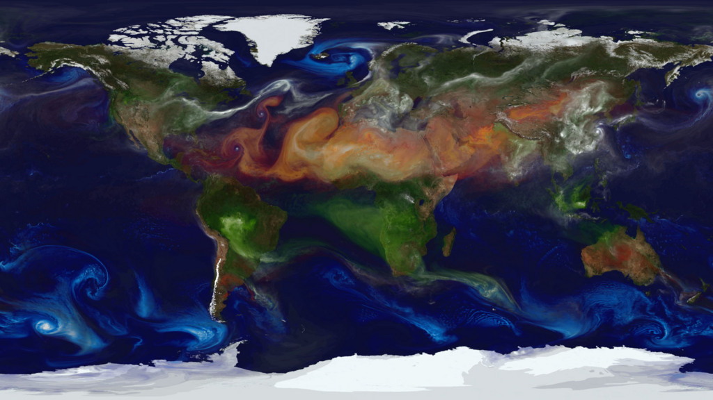

We model the atmosphere the mission has to act on.
SSAI builds and operates the global Earth-system models, data assimilation systems, and atmospheric-chemistry diagnostics that turn raw observation into a coherent picture of a changing planet. We run this work inside NASA Goddard's modeling and assimilation enterprise, and we deliver it the first time, and every time.
From observation to a model the mission can trust.
Satellites and ground networks produce a flood of measurements. On their own they are scattered, gapped, and uncalibrated. SSAI turns them into a single, physically consistent state of the atmosphere and the Earth system around it.
We assimilate observations into global models, run the simulations that project how the atmosphere will behave, and diagnose the chemistry that drives air quality and climate. This is the work behind storm forecasts, ozone records, and the climate reanalyses agencies depend on. Much of it runs through the Science and Mission Data Assimilation (SAMDA) effort at NASA Goddard, where our scientists support the models and data systems that the agency's flagship Earth-science programs are built on.
We have done this kind of science since 1977. Our atmospheric modelers, assimilation specialists, and air-quality scientists sit inside the agency teams they support, so the model improvements they make reach the operational systems that have to perform when the mission cannot fail.
 NASA / Goddard Space Flight Center / GEOS global modeling
NASA / Goddard Space Flight Center / GEOS global modeling
Four lines of modeling science.
We cover the full chain from raw observation to operational product: assimilating data, modeling the Earth system, diagnosing the climate record, and tracking the chemistry that determines the air people breathe.
Global Earth-System Modeling
We develop and run coupled atmosphere, ocean, land, and aerosol models that simulate the Earth system as one connected machine. We support the global modeling frameworks used at NASA Goddard to forecast weather, project seasonal behavior, and study how the system responds to change.
Data Assimilation
We fuse millions of satellite and in-situ observations into a single, physically consistent atmospheric state. Our assimilation work, central to the SAMDA effort, includes hyperspectral infrared sounders and the methods that let new observing systems improve the model from the day they reach orbit.
Climate Diagnostics & Reanalysis
We build and analyze the long, consistent records that turn decades of observation into climate understanding. We diagnose trends, validate reanalyses, and quantify how the atmosphere is changing, giving agencies a defensible baseline for the decisions that follow.
Atmospheric Chemistry & Air Quality
We model the chemistry that drives air quality, from stratospheric and tropospheric ozone to surface PM2.5. We track aerosols, smoke, and pollutants across the globe and translate the science into forecasts and assessments that protect public health.
Hurricane & Severe-Weather Science
We study how the atmosphere organizes into tropical cyclones and severe storms, and how new observations sharpen the forecast. Our scientists' work on atmospheric dynamics and hurricane prediction informs the assimilation methods agencies rely on to see a storm forming earlier.
Observation to decision
We own the full path from a raw satellite radiance to a product a decision-maker can act on. That is what lets the model improvements our scientists make show up where the mission actually feels them.
Science delivered where the models run.
Our atmosphere and climate work is anchored in the Science and Mission Data Assimilation effort at NASA Goddard, in Code 600's Sciences and Exploration Directorate.
Embedded with the agency's modeling teams, our scientists advance the data assimilation systems, run the global simulations, and diagnose the results that feed NASA and partner programs. The work spans hyperspectral infrared sounding, aerosol and chemistry modeling, and the reanalyses that anchor the climate record.
Because we sit inside the enterprise, the methods we develop do not stop at a paper. They reach the operational and research systems that the nation's Earth-science missions are built on, and they hold up under the scrutiny of the agencies that use them.

NASA / Goddard Space Flight Center / GEOS aerosol modelingTrusted on the missions that measure the planet.
Our atmosphere, climate, and chemistry science supports the agencies responsible for forecasting weather, protecting air quality, and maintaining the nation's climate record. The same modeling and assimilation discipline carries into defense and national-security environmental intelligence.
NASA Goddard, Code 600
We support the Science and Mission Data Assimilation enterprise inside the Sciences and Exploration Directorate: global modeling, data assimilation, atmospheric chemistry, and the reanalyses behind NASA's Earth-science programs.
NOAA & the weather enterprise
Our atmospheric modeling and assimilation work informs the operational forecasting and environmental prediction that NOAA and its partners depend on, around the clock.
EPA & civil agencies
Our air-quality and atmospheric-chemistry science, from ozone to PM2.5, supports the federal agencies charged with assessing and protecting environmental and public health.
DoD environmental intelligence
The same modeling and assimilation rigor extends to defense, where atmospheric state, aerosols, and space-weather inputs shape environmental intelligence for the mission.
More from the Science practice.
Atmosphere and climate modeling is one of five capabilities in our Science practice. It draws on the observing systems that feed the models and the space-weather science that bounds them.
Earth Science & Remote Sensing
We engineer the instruments and process the observations of oceans, ice, land, and atmosphere from orbit. These are the measurements our models assimilate, and the ground truth that holds them honest.
Explore →Heliophysics & Space Weather
We study the Sun-Earth connection and the space weather that drives the upper atmosphere. It sets the boundary conditions our atmospheric models inherit and the radiation environment missions plan around.
Explore →Planetary & Astrophysics
The modeling and data-assimilation methods we sharpen on Earth's atmosphere carry outward, to the planetary atmospheres and astrophysical observations that extend our reach beyond this world.
Explore →Put a modeling team inside your mission.
From global assimilation to air-quality chemistry, we deliver the atmosphere and climate science that holds up when the mission cannot fail. Tell us what you need to see, and we will model it the first time, and every time.